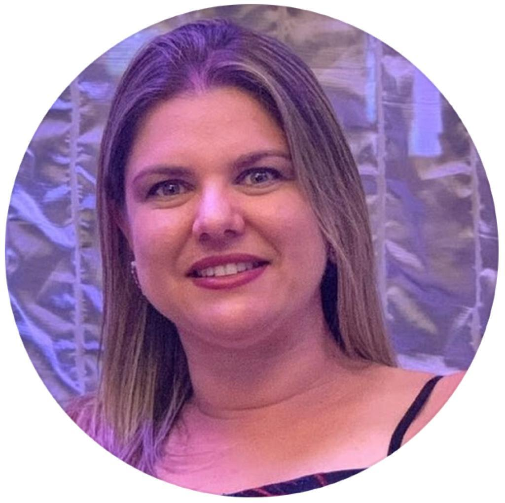

Projeto EDUCA+
Desenvolvimento de um portal educativo inclusivo, com conteúdos acessíveis e ferramentas de apoio à aprendizagem para estudantes com necessidades especiais.
"Transformando vidas por meio da educação, inclusão e tecnologia."
Sou uma profissional com mais de 20 anos de experiência em educação, com especialização em gestão educacional, psicopedagogia clínica e institucional, e educação inclusiva. Atuo também na integração de tecnologias educacionais, metodologias ativas e políticas de diversidade e inclusão. Atualmente, curso Análise e Desenvolvimento de Sistemas, buscando unir educação e tecnologia.
Desenvolvimento de um portal educativo inclusivo, com conteúdos acessíveis e ferramentas de apoio à aprendizagem para estudantes com necessidades especiais.
Projeto de desenvolvimento de uma aplicação para facilitar o acompanhamento pedagógico e psicopedagógico dos alunos, integrando pais, professores e especialistas.